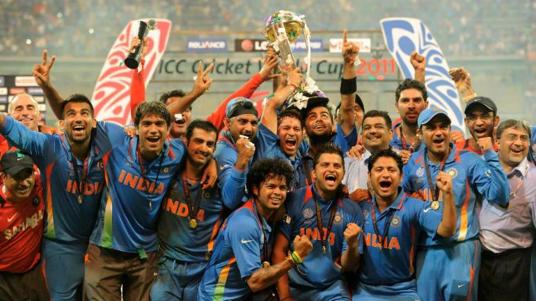
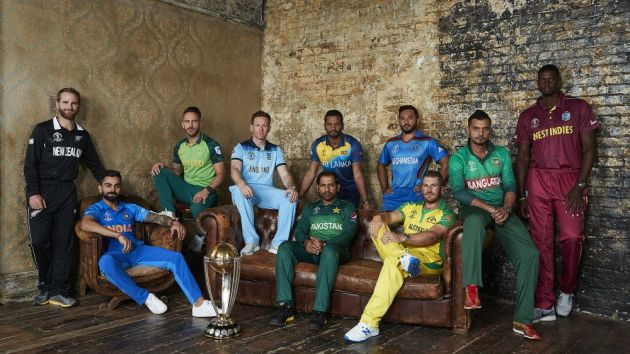
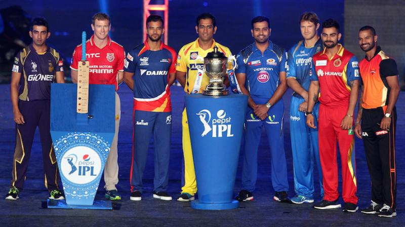
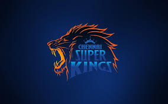
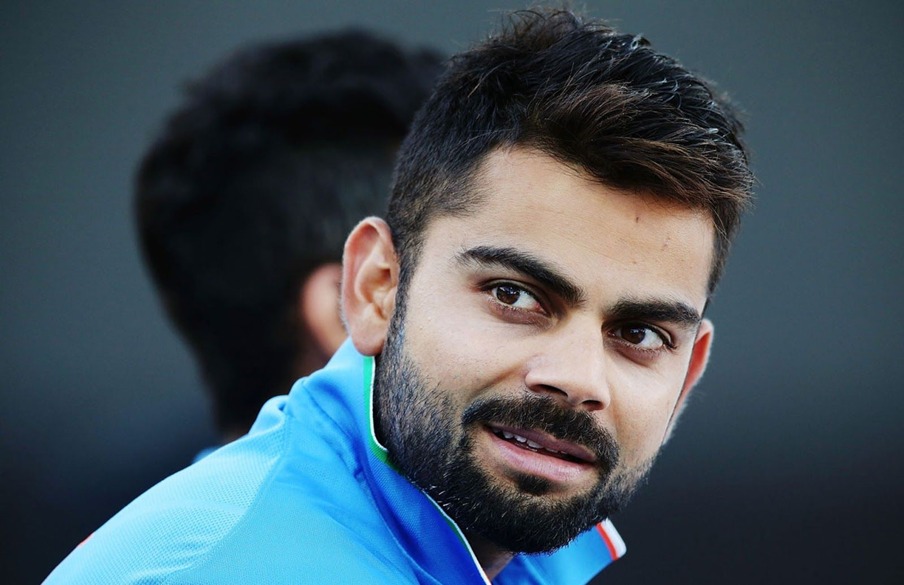
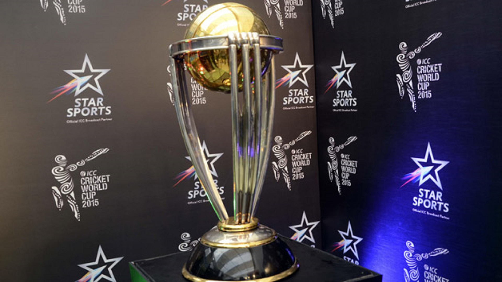
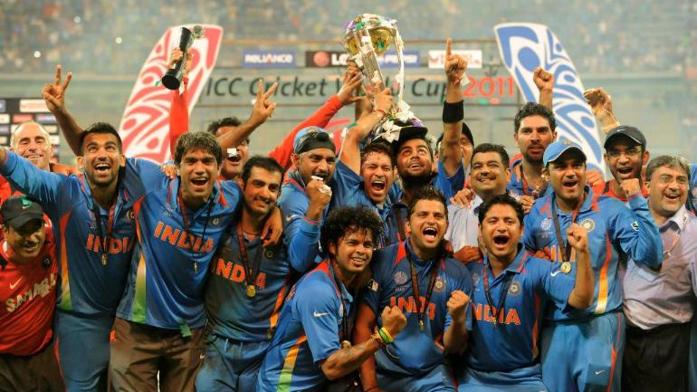
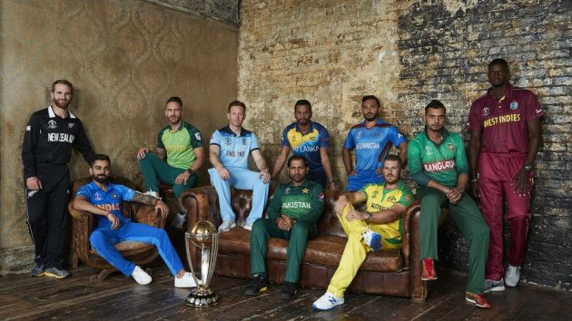
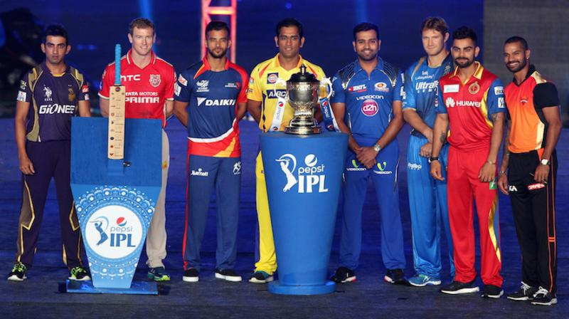
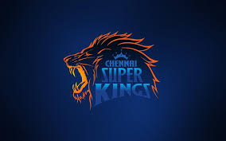
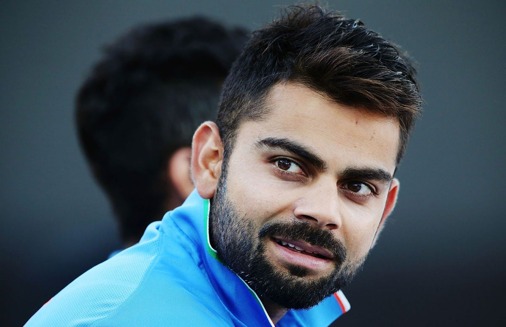
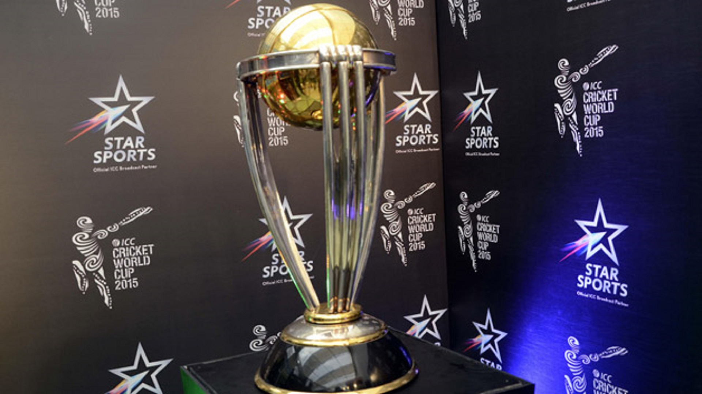
History of cricket
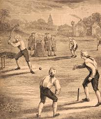 Having originated in south-east < England, it became the country's national sport in the 18th century and has developed globally in the 19th and 20th centuries. International matches have been played since 1844 and Test cricket began, retrospectively recognised, in 1877.The sport of cricket has a known history beginning in the late 16th century. Having originated in south-east England, it became the country's national sport in the 18th century and has developed globally in the 19th and 20th centuries. International matches have been played since 1844 and Test cricket began, retrospectively recognised, in 1877. Cricket is the world's second most popular spectator sport after association football (soccer). Governance is by the International Cricket Council (ICC) which has over one hundred countries and territories in membership although only twelve currently play Test cricket.
The first reference to cricket being played as an adult sport was in 1611, and in the same year, a dictionary defined cricket as a boys' game. There is also the thought that cricket may have derived from bowls, by the intervention of a batsman trying to stop the ball from reaching its target by hitting it away.Historically, cricket's origins are uncertain and the earliest definite reference is in south-east England in the middle of the 16th century. It spread globally with the expansion of the British Empire, leading to the first international matches in the second half of the 19th century. The game's governing body is the International Cricket Council (ICC), which has over 100 members, twelve of which are full members who play Test matches. The game's rules are held in a code called the Laws of Cricket which is owned and maintained by Marylebone Cricket Club (MCC) in London. The sport is followed primarily in the Indian subcontinent, Australasia, the United Kingdom, southern Africa and the West Indies, its globalisation occurring during the expansion of the British Empire and remaining popular into the 21st century.[1] Women's cricket, which is organised and played separately, has also achieved international standard. The most successful side playing international cricket is Australia, which has won seven One Day International trophies, including five World Cups, more than any other country and has been the top-rated Test side more than any other country.
ODI Ranking
| TEAM | RATING |
|---|---|
| India | 127 |
| England | 119 |
| Zew Zealand | 116 |
Throughout the English countryside, each year in late April and early May, that familiar sound of leather (ball) against willow (bat) can once again be heard, signifying the start of a new cricket season. For American readers – this is the name of England’s premier summer sport and not some noisy bug!
A game, which could perhaps be described as a cross between baseball and chess. A game, which takes five days to play and more often than not ends in a draw. A game which has found devotees, followers and lovers in all of the far-flung reaches of the old British Empire including Australia, New Zealand, West Indies, South Africa, India, Pakistan and Sri Lanka.